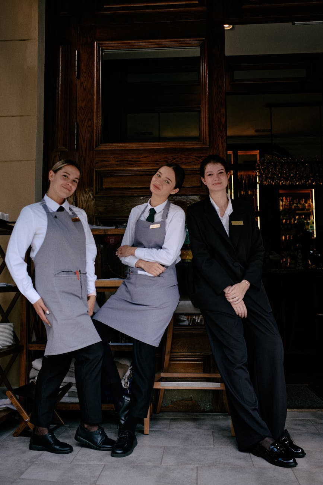

Our Story
Traditional British Comfort Food Since Day One
About Stacey's Pie & Mash
Stacey's Pie & Mash has been serving the Basildon community with traditional British comfort food that brings families together. Our authentic recipes and commitment to quality ingredients ensure every plate delivers the hearty, satisfying flavors you remember and love.
From our signature pies to our time-honored preparation methods, we honor the traditions that made British pie and mash a beloved staple for generations.

Our Mission & Values
Authenticity
We stay true to traditional British recipes passed down through generations, using time-honored methods and quality ingredients.
Community
Stacey's is more than a restaurant—it's a gathering place where families and friends come together to share meals and memories.
Quality
Every ingredient matters. We source the finest quality products to ensure our food tastes as good as it should.
What We Offer
Traditional Pie & Mash
Our signature dish, prepared with slow-cooked meat and mash, served with rich gravy the traditional British way.
Jellied Eels
A classic East End delicacy prepared with care and authenticity, bringing back the flavors of old London.
Takeaway Service
Take our comfort food home with you. Fresh, hot, and ready to enjoy with your loved ones anytime.
Behind the Counter
Led by Tradition & Passion
Our team is dedicated to keeping the traditions of British pie and mash alive. Every member shares a passion for quality food and genuine hospitality. We take pride in serving Basildon with the care and authenticity that makes Stacey's a beloved local institution.
Experience Traditional British Comfort
Visit us today at 221 Timberlog Ln, Basildon SS14 1PB and discover why Stacey's Pie & Mash is a Basildon favorite.
Get in Touch